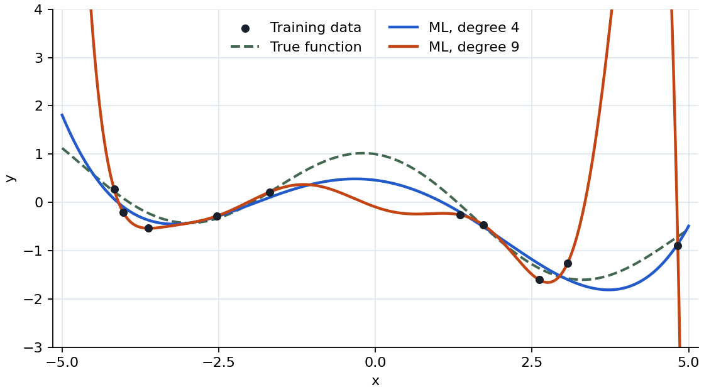
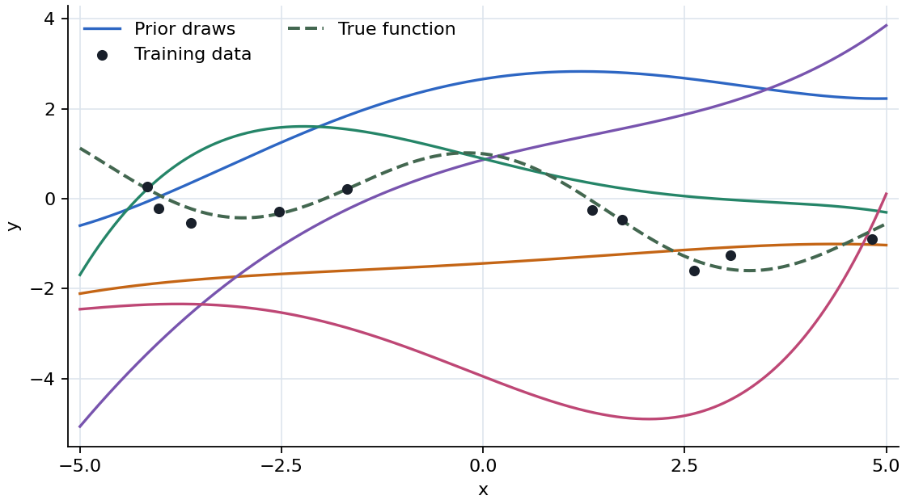
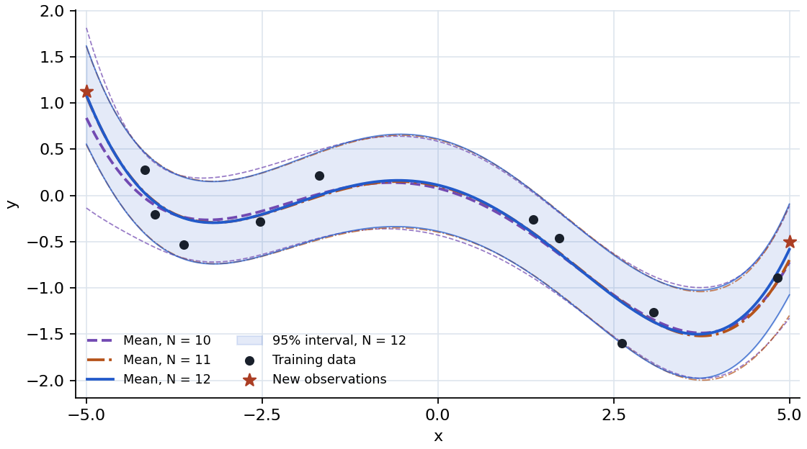

ML과 MAP은 대표 계수를 구해요. 베이지안 예측은 계수의 사후분포를 새 입력에 옮겨 평균과 분산을 함께 구해요.
다항 회귀와 과적합
손으로 그린 직선을 설계행렬로 맞춰요
조교 실습 7–10쪽
정확히 말하면
기울기 $a$와 절편 $b$를 손으로 정하면 직선 $\hat y=b+ax$가 하나 생겨요. 실습은 그 다음에 동일한 점들에 대해 관측과 직선 사이 세로 거리의 제곱합이 최소인 $a,b$를 구했어요.
$x_n$은 $[-5,5]$의 균등분포에서 뽑은 입력이에요. 참함수 $g(x)=-\sin(x/5)+\cos x$에 평균 0, 표준편차 $0.2$인 독립 가우시안 잡음을 더해 $y_n$을 만들어요. 아래 코드는 실습의 10개 훈련점을 생성해요.
import numpy as np
np.random.seed(19)
sigma = 0.2
x = np.sort(np.random.uniform(-5, 5, 10))
y = -np.sin(x / 5) + np.cos(x) + np.random.normal(0, sigma, x.size)
직선의 특징 열벡터는 $\phi(x)=(1,x)^\top$, 계수 열벡터는 $\boldsymbol{\theta}=(b,a)^\top$예요. 특징을 한 입력씩 행으로 쌓으면 $\Phi\in\mathbb R^{N\times2}$가 돼요. 첫 행과 계수의 곱은 $1\cdot b+x_1\cdot a$이고, 이 계산을 모든 행에 적용한 결과가 훈련 예측 벡터 $\Phi\boldsymbol{\theta}$예요.
모형의 관측 잡음을 독립이고 분산이 같은 가우시안으로 두면, 음의 로그우도에서 계수에 따라 변하는 부분은 제곱오차에 비례해요. 중간고사 6(a)와 같은 최소제곱 문제예요.
ML 계수$$\boldsymbol{\theta}_{\mathrm{ML}}=\Phi^+\mathbf y$$
훈련점 열 개를 통과하면 새 입력에서도 잘 맞을까요?
조교 실습 11–12쪽
정확히 말하면
훈련점은 그대로 두고 다항식의 차수만 바꿔 봐요. 9차 곡선은 검은 점을 거의 모두 통과하지만, 데이터가 드문 곳에서 4차 곡선보다 참함수에서 더 멀어져요.

실습 표본으로 재현한 그림이에요. 9차 곡선의 일부는 세로축 표시 범위를 벗어나요.
참함수와 비교할 수 있는 모의실험이어서, $[-5,5]$를 균등하게 나눈 501개 위치에서 참함수와의 RMSE(평균제곱근오차)도 구했어요. 9차의 훈련 RMSE는 수치 오차 수준으로 작고, 구간 RMSE는 $4.016$이에요.
차수 $M$
훈련점 10개의 RMSE
격자에서 참함수와의 RMSE
2
0.398
0.730
4
0.179
0.277
6
0.136
0.230
9
약 0
4.016
9차에서 왜 훈련 오차가 거의 0이 될까요? 직선의 설계행렬에 제곱, 세제곱부터 9제곱까지 열을 더하면 가중치도 10개가 돼요. 실습처럼 입력 10개가 서로 다르면 $10\times10$ 방데르몽드 행렬이 가역이어서 $\Phi\boldsymbol{\theta}=\mathbf y$를 풀 수 있어요. 잡음까지 포함한 $y_n$을 통과한 결과예요. 9차에서 훈련 오차는 작아지고 참함수와의 오차는 커진 것이 이 실습의 과적합이에요.
실습에서는 $z=x/5$로 바꿔 $|z|\le 1$인 범위에서 거듭제곱을 만들어요. $M$차의 특징과 곡선은 다음과 같아요.
입력에 따라 곡선이 그려져도 계수에 대해서는 선형이에요. 입력 스케일링은 거듭제곱의 크기를 제어해 수치 안정성을 돕고, 예측에 넣는 새 입력에도 같은 변환을 적용해요. 차수별로 비교한 최소제곱의 다항식 공간은 이 스케일링으로 그대로 유지돼요.
M = 9
x_plot = np.linspace(-5, 5, 501)
coef_ml = np.polyfit(x / 5, y, M)
y_ml = np.polyval(coef_ml, x_plot / 5)
서로 다른 훈련점 10개를 9차식으로 보간할 수 있어요. 훈련 오차와 새 입력의 오차를 함께 봐야 과적합을 판단할 수 있어요.
용어
과적합(overfitting)
훈련점의 잡음까지 따라가 새 입력의 예측이 나빠지는 현상이에요.
핵심 식
스케일링한 특징$$\phi(x)=(1,z,z^2,\ldots,z^M)^\top$$
입력에 대한 곡선, 계수의 가중합$$f_{\boldsymbol{\theta}}(x)=\phi(x)^\top\boldsymbol{\theta}$$
MAP와 정규화
같은 9차 곡선에서 계수에 벌점을 줘요
조교 실습 12–14쪽중간고사 6번
정확히 말하면
실습의 훈련점과 9차 특징은 고정하고 정규화 세기 $\lambda$만 바꿔요. $\lambda$를 키우면 계수의 노름이 줄어요. 이 표본에서 참함수와 가장 가까웠던 값은 비교한 네 값 중 $\lambda=0.01$이에요.
$\lambda$
계수 노름
격자에서 참함수와의 RMSE
0.0001
21.095
0.765
0.01
4.686
0.475
0.1
1.774
0.598
1.0
0.717
0.723
$\lambda=0.01$일 때 크기 $4.686$인 것은 아래 목적함수에서 제곱해 벌점을 매기는 $\|\boldsymbol{\theta}\|$예요. $\lambda$가 작으면 계수에 대한 제약이 약하고, 너무 크면 필요한 굴곡까지 억제해 과소적합이 생길 수 있어요.
1 / 2가우시안 사전분포를 벌점으로 읽어요
최소제곱에 더할 항을 사전분포에서 가져와요.
잡음 분산은 $\sigma^2$이고 사전분포는 $\boldsymbol{\theta}\sim\mathcal N(\mathbf 0,\gamma^2 I)$예요. 이 사전분포는 절편을 포함한 계수가 0에 가까울수록 높은 밀도를 줘요. 사후밀도는 우도와 사전밀도의 곱에 비례해요. 음의 로그를 취하면 두 항의 합이 돼요.
훈련점 $(-1,0),(0,1),(1,3)$을 직선 특징에 넣으면 $\Phi^\top\Phi=\operatorname{diag}(3,2)$, $\Phi^\top\mathbf y=(4,3)^\top$예요. 예를 들어 두 번째 성분 $3$은 $(-1)\cdot0+0\cdot1+1\cdot3$이에요.
세 관측의 잡음 분산이 각각 1이에요. 독립 정규밀도 세 개를 곱한 우도는 $L(\boldsymbol{\theta})=(2\pi)^{-3/2}\exp[-\|\mathbf y-\Phi\boldsymbol{\theta}\|^2/2]$예요.
ML은 분모가 $(3,2)$여서 $(4/3,3/2)^\top$을 얻어요. MAP은 $\sigma^2=\gamma^2=1$이므로 $\lambda=1$이고, 두 대각선이 $(4,3)$으로 바뀌어 $(1,1)^\top$을 얻어요. 절편에도 벌점이 적용돼요.
독립 가우시안 잡음과 평균 0의 등방 가우시안 사전분포를 쓰면 MAP은 제곱오차와 모든 계수의 제곱합에 대한 벌점을 함께 줄여요.
실습의 3번째 과제에서는 4차 모형을 쓰고, 계수의 사전 표준편차를 $\gamma=2$로 둬요. 사전분포 $\mathcal N(\mathbf 0,4I)$에서 계수 열벡터를 하나 뽑고 모든 입력에서 $\phi(x)^\top\boldsymbol{\theta}$를 계산하면 곡선 하나가 생겨요. 계수를 다섯 번 뽑으면 훈련점을 보기 전에 가능하다고 둔 곡선 다섯 개가 나와요.

실습 설정에서 얻은 사전 곡선이에요. 검은 점은 비교용으로 표시한 훈련 관측이에요.
관측을 반영하려면 일반 가우시안 사전분포 $\mathcal N(\mathbf m_0,S_0)$를 써요. 관측 잡음은 서로 독립이고 계수 벡터와도 독립인 가우시안이에요. 사후분포는 $\mathcal N(\mathbf m_N,S_N)$이고, 평균은 $(M+1)\times1$, 공분산은 $(M+1)\times(M+1)$이에요.
$$S_N^{-1}=S_0^{-1}+\sigma^{-2}\Phi^\top\Phi$$
가우시안 사후밀도의 음의 로그에서 이차항은 $\tfrac12\boldsymbol{\theta}^\top S_N^{-1}\boldsymbol{\theta}$예요. 두 계수 벡터 사이에 있는 $S_N^{-1}$이 정밀도예요. 사전의 이차항에서 $S_0^{-1}$이, 관측의 제곱오차 이차항에서 $\sigma^{-2}\Phi^\top\Phi$가 와요. 이 두 항을 더한 뒤 역행렬을 취하면 공분산 $S_N$이에요.
괄호 안의 열벡터는 음의 로그사후를 이차식으로 펼쳤을 때, 계수 벡터에 곱해 빼는 열벡터예요. 평균을 중심으로 완전제곱하면 그 계수가 $S_N^{-1}\mathbf m_N$이므로 왼쪽에서 $S_N$을 곱해 평균을 구해요.
중간고사 9(a)·9(b) 계산 확인
훈련점 $(-1,1),(1,3)$의 특징은 $(1,-1)^\top,(1,1)^\top$이에요. 두 특징 열벡터를 각각 전치해 $\Phi$의 두 행에 쌓고, $\mathbf y=(1,3)^\top$를 세워요.
$$\Phi=\begin{bmatrix}1&-1\\1&1\end{bmatrix}$$
그러면 $\Phi^\top\Phi=2I$이고 $\Phi^\top\mathbf y=(4,2)^\top$예요.
$S_0=I$, $\sigma^2=1$을 넣으면 정밀도는 $I+2I=3I$예요. 역행렬을 취해 $S_N=\tfrac13I$를 얻고, $\mathbf m_0=\mathbf0$과 함께 평균 식에 대입하면 $\mathbf m_N=(\tfrac43,\tfrac23)^\top$이에요. 답에는 이 평균과 공분산을 함께 넣어 $\mathcal N((\tfrac43,\tfrac23)^\top,\tfrac13 I)$까지 써요.
왜 MAP 곡선과 평균 곡선이 겹칠까요? 가우시안 사후밀도의 최빈점이 곧 평균이어서 $\mathbf m_N=\boldsymbol{\theta}_{\mathrm{MAP}}$이에요. 위 사후평균 공식에 $\mathbf m_0=\mathbf0$, $S_0=\gamma^2I$를 넣고 정규방정식을 $\sigma^2$배 하면 앞서 구한 MAP 식이 나와요. 실습의 4차 모형에서는 $\sigma=0.2$, $\gamma=2$이므로 $\lambda=0.01$이에요. 곡선이 겹치려면 두 방법에서 같은 데이터, 특징, 사전분포를 사용해야 해요.
사전 정밀도와 관측의 정보량을 더한 값은 사후 정밀도예요. 역행렬을 취해야 공분산이 돼요. 가우시안 사후의 최빈값과 평균은 같아요.
용어
정밀도(precision)
공분산 행렬의 역행렬이에요.
사전 곡선
관측을 반영하기 전에 뽑은 계수 하나를 모든 입력에 적용해 그려요.
핵심 식
사후 정밀도$$S_N^{-1}=S_0^{-1}+\sigma^{-2}\Phi^\top\Phi$$
중간고사 10번에서 $x_*=2$를 넣으면 $f_*$와 $y_*$의 평균은 둘 다 $\tfrac83$이에요. 분산은 함수값 $f_*$가 $\tfrac53$, 새 관측값 $y_*$가 $\tfrac83$이에요. 두 값의 차이 $1$은 새 관측의 독립 잡음 분산이에요.
먼저 잡음 없는 함수값 $f_*=\phi_*^\top\boldsymbol{\theta}$를 구해요. $\phi_*=\phi(x_*)$는 새 입력에서 만든 고정된 특징 열벡터예요. 10번에서는 $\phi_*=(1,2)^\top$라서 $f_*=\theta_0+2\theta_1$이에요. 가우시안 계수 벡터의 고정된 가중합이므로 $f_*$도 가우시안이에요. 이 토픽의 평균과 분산은 입력과 관측 데이터를 고정한 조건부 값이에요.
$$\mu_*=\phi_*^\top\mathbf m_N$$
$$\operatorname{Var}(f_*)=\phi_*^\top S_N\phi_*$$
평균에는 9번에서 얻은 $\mathbf m_N$을 넣어 $1\cdot\tfrac43+2\cdot\tfrac23=\tfrac83$을 얻어요. 분산에서는 각 계수의 분산과 공분산을 가중합에 옮겨요. 10번에서는 $S_N=\tfrac13 I$여서 공분산이 0이고, $\phi_*^\top S_N\phi_*=\tfrac13(1^2+2^2)=\tfrac53$이에요. 공분산이 0이 아닌 경우에는 교차항 $2\cdot 1\cdot 2\operatorname{Cov}(\theta_0,\theta_1\mid\mathcal D)$도 더해요.
다음으로 $y_*=f_*+\varepsilon_*$를 구해요. 새 잡음은 평균이 0이고, 학습 데이터와 계수로부터 독립이에요. 평균은 그대로이고 독립인 두 항의 분산을 더해요.
$$s_*^2=\phi_*^\top S_N\phi_*+\sigma^2$$
10번에서는 $\sigma^2=1$이어서 $y_*\mid x_*,\mathcal D\sim\mathcal N(\tfrac83,\tfrac83)$이에요. 실습 그래프에서 색으로 표시한 것은 새 관측값의 입력별 95% 예측구간 $\mu_*\pm1.96\sqrt{s_*^2}$예요. 두 끝점에는 분산의 제곱근인 표준편차를 써요.
실습에서 입력 $x_*=0$만 주어진 경우. 관측 10개로 이미 구한 사후분포를 그대로 사용해요. $\phi(0)=(1,0,0,0,0)^\top$이므로 예측평균에는 절편의 사후평균만 들어가요. 예측분산은 절편의 사후분산에 잡음 분산 $0.04$를 더해요. 실습 표본에서 새 관측 $y_*$의 예측평균은 약 $0.078$, 95% 예측구간은 약 $[-0.429,0.585]$예요.
중간고사 5(b)와 같은 주변화. 5(b)는 새 패킷의 성공확률을 계수 후보마다 계산하고 사후확률로 가중했어요. 값은 $\tfrac13\cdot\tfrac13+\tfrac23\cdot\tfrac23=\tfrac59$이고, 최빈 계수 $\tfrac23$ 하나를 대입한 MAP 예측값은 $\tfrac23$이에요. 10(b)에서는 연속인 계수 전체에 대해 같은 가중 평균을 적분으로 써요.
고정된 새 특징 $\phi_*$로 사후 평균과 공분산을 스칼라로 옮겨요. 새 관측값에는 독립 잡음의 분산이 더 들어가요.
용어
주변화(marginalization)
가능한 계수의 예측을 사후확률 또는 사후밀도로 가중해 합하거나 적분해요.
예측구간(predictive interval)
새 관측 분포의 중앙 95%를 입력별로 표시해요.
핵심 식
새 입력의 평균$$\mu_*=\phi_*^\top\mathbf m_N$$
새 관측의 분산$$s_*^2=\phi_*^\top S_N\phi_*+\sigma^2$$
새 점을 볼 때 방금 구한 사후를 다음 사전으로 써요
조교 실습 18–20쪽
정확히 말하면
이번에는 입력과 관측값의 쌍 $(x_{\mathrm{new}},y_{\mathrm{new}})$을 받아요. $\Phi$에 새 특징 행을, $\mathbf y$에 새 관측값을 붙이므로 사후평균과 공분산을 둘 다 다시 계산해요. 같은 4차 모형, 잡음 분산, 초기 사전분포를 사용하고 $x=-5$, $x=5$ 순으로 관측을 추가해요. 첫 관측을 넣자 왼쪽 끝의 예측구간이 크게 좁아지고, 두 번째 관측을 넣자 오른쪽 끝에서도 좁아져요.

굵은 선은 예측평균, 위아래 가는 선은 95% 예측구간의 경계예요. 파란 영역은 관측 12개를 반영한 구간이에요.
아래 숫자는 예측분산을 구한 뒤 $1.96\sqrt{s_*^2}$로 계산한 구간 반폭이에요. 예를 들어 첫 관측 뒤 $x_*=-5$의 구간은 평균 양쪽으로 각각 약 $0.531$만큼 뻗어요.
관측
$x_*=-5$ 반폭
$x_*=5$ 반폭
기존 10개
0.975
0.606
$x=-5$ 추가
0.531
0.601
$x=5$도 추가
0.531
0.492
기존 사후분포에는 앞서 본 10개 관측의 우도가 이미 들어 있어요. 계수가 주어졌을 때 각 관측의 잡음이 독립이므로, 그 사후분포에 새 관측 하나의 우도를 곱하고 정규화하면 11개를 한 번에 처리한 사후분포와 같아요.
공분산이 왜 줄어들까요? 새 특징을 $\phi_{N+1}$로 놓으면 기존 사후 정밀도에 양의 준정부호 행렬 $\sigma^{-2}\phi_{N+1}\phi_{N+1}^\top$이 더해져요. 이 항은 $\Phi^\top\Phi$를 행별 외적의 합으로 볼 때 새 행 하나가 보태는 몫이에요.
사전을 고정한 이 모형에서는 새 관측을 보태면 계수 불확실성이 커지지 않아요. 평균 갱신에는 새 관측값 $y_{N+1}$도 들어가요. 예측분산에는 새 관측의 잡음 $\sigma^2$가 계속 남아서, 이 설정에서 예측구간의 반폭은 $1.96\sigma=0.392$ 이상이에요.
Colab에서 확인해요. 처음에 생성한 x, y, sigma를 사용해요. variance는 입력마다 새 관측의 분산 하나를 계산해요. 마지막 줄은 관측 10개, 11개, 12개에서 양 끝의 반폭을 차례대로 출력해요.